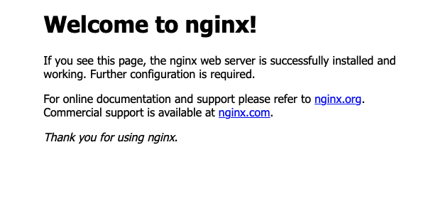
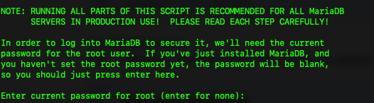
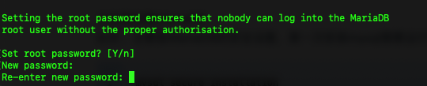
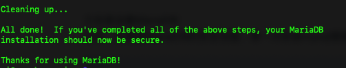
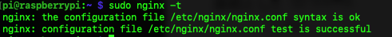
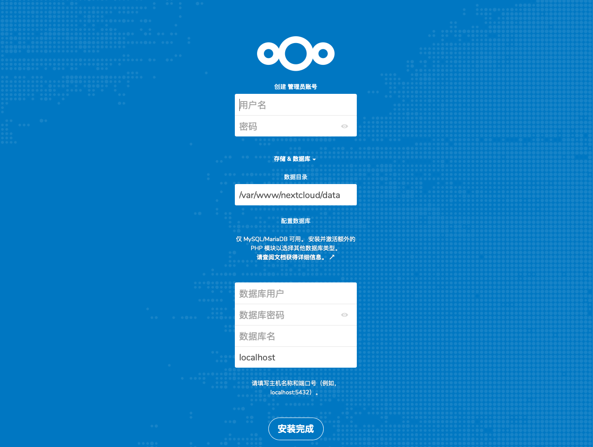
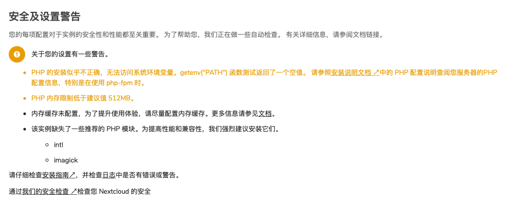
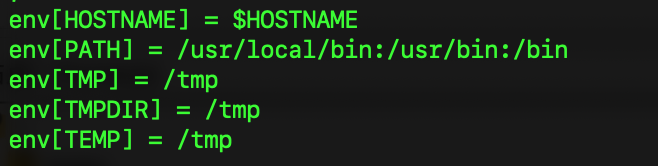
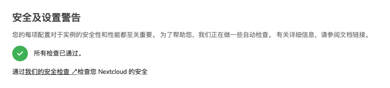

前言
最近买了树莓派4B,USB 有两个接口升级成了USB3.0,有线网口也升级成了千兆网络,这么好的硬件,不拿来干点事情有点浪费了,所以准备搭建 NextCloud 网盘来临时充当个人网盘使用.
安装 PHP
Raspbian 最新的系统源里面默认最新的是 PHP7.1,NextCloud 推荐使用7.3.所以我们首先需要把源更新成最新的
安装软件源拓展工具
sudo apt -y install software-properties-common apt-transport-https lsb-release ca-certificates
添加 GPG
sudo wget -O /etc/apt/trusted.gpg.d/php.gpg https://mirror.xtom.com.hk/sury/php/apt.gpg
添加 Sury 软件源
sudo sh -c 'echo "deb https://mirror.xtom.com.hk/sury/php/ $(lsb_release -sc) main" > /etc/apt/sources.list.d/php.list'
安装 PHP7.3
sudo apt update
sudo apt install -y php7.3-fpm php7.3-mysql php7.3-curl php7.3-gd php7.3-json php7.3-xml php7.3-zip php7.3-mbstring openssl
配置 PHP
安装 PHP7.3 和 NextCloud 需要用的相关组件.安装完成后修改 php.ini 文件
sudo vim /etc/php/7.3/php.ini
找到;cgi.fix_pathinfo=1,把;去掉,然后把·改成0
PHP 服务相关
将 php-fpm 设置为自启动
sudo systemctl enable php7.3-fpm
启用 php7.3-fpm
sudo service php7.3-fpm start
重启 php-7.3fpm
sudo service php7.3-fpm restart
停止 php7.3-fpm
sudo service php7.3-fpm stop
安装 Nginx
安装 Nginx
sudo apt install -y nginx
打开地址http://树莓派ip/出现一下界面说明安装成功

Nginx 服务相关
将 Nginx 设置为自启动
sudo systemctl enable nginx
启用 Nginx
sudo service nginx start
重启 Nginx
sudo service nginx restart
停止 Nginx
sudo service nginx stop
安装 MariaDB
安装 MariaDB
sudo apt install -y mariadb-server
初始化 MariaDB
sudo mysql_secure_installation
首先会让你输入当前 root 密码,因为没有 root 密码,直接回车.

然后初始化 root 密码,

然后剩余选项全都默认回车就行了.当看见以后提示,说明初始化完成

登陆 MariaDB 数据库
sudo -uroot -p
如果出现登录失败的错误,重启下 MariaDB 服务器后重新登陆就行了
安装 NextCloud
安装 NextCloud
下载安装包
sudo wget https://download.nextcloud.com/server/releases/nextcloud-16.0.4.zip
解压 NextCloud 安装包,移动到 Nginx 的 web 根目录下,我的根目录一般设置成 /var/www/
sudo unzip nextcloud-16.0.4.zip
sudo mv nextcloud /var/www/
给 Nginx 的默认用户赋予读写 nextcloud 文件夹的权限
sudo chown -R www-data /var/www/nextcloud
配置 Nginx
修改 nginx.conf 全局配置文件
sudo vim /etc/nginx/nginx.conf
找到 include /etc/nginx/sites-enabled/*; 注释掉.
因为我要启用 https 所以我把 ssl 的证书也配置在全局文件里面了,这样子所有的子文件夹都开启 ssl 了.添加 ssl 设置,证书在 cert 文件夹内
ssl on;
ssl_certificate cert/2296431_123.abc.com.pem;
ssl_certificate_key cert/2296431_123.abc.com.key;
ssl_session_timeout 5m;
ssl_ciphers ECDHE-RSA-AES128-GCM-SHA256:ECDHE:ECDH:AES:HIGH:!NULL:!aNULL:!MD5:!ADH:!RC4;
ssl_protocols TLSv1 TLSv1.1 TLSv1.2;
ssl_prefer_server_ciphers on;
接下来从默认配置文件文件里面复制一个,到 /etc/nginx/conf.d/ 文件夹下,并且重命名为 default.conf ,然后编辑
sudo cp /etc/nginx/sites-available/default /etc/nginx/conf.d/default.conf
sudo vim etc/nginx/conf.d/default.conf
修改内容参考 NextCloud 官网的Nginx配置文件,因为我 Nginx 下面还要挂载其他网页,所以我选择子目录的配置文件.下面是我的配置文件
upstream php-handler {
server unix:/var/run/php/php7.3-fpm.sock;
}
server {
listen 80;
listen [::]:80;
server_name 123.abc.com;
return 301 https://$server_name:$server_port$request_uri;
}
server {
listen 8082 ssl http2;
listen [::]:8082 ssl http2;
server_name 123.abc.com;
add_header Strict-Transport-Security "max-age=15768000; includeSubDomains; preload;";
add_header X-Content-Type-Options nosniff;
add_header X-XSS-Protection "1; mode=block";
add_header X-Robots-Tag none;
add_header X-Download-Options noopen;
add_header X-Permitted-Cross-Domain-Policies none;
add_header Referrer-Policy no-referrer;
fastcgi_hide_header X-Powered-By;
root /var/www;
index index.html index.htm index.php;
#NextCloud
location = /robots.txt {
allow all;
log_not_found off;
access_log off;
}
location = /.well-known/carddav {
return 301 $scheme://$host:$server_port/nextcloud/remote.php/dav;
}
location = /.well-known/caldav {
return 301 $scheme://$host:$server_port/nextcloud/remote.php/dav;
}
location /.well-known/acme-challenge { }
location ^~ /nextcloud {
client_max_body_size 10G;
fastcgi_buffers 64 4K;
gzip on;
gzip_vary on;
gzip_comp_level 4;
gzip_min_length 256;
gzip_proxied expired no-cache no-store private no_last_modified no_etag auth;
gzip_types application/atom+xml application/javascript application/json application/ld+json application/manifest+json application/rss+xml application/vnd.geo+json application/vnd.ms-fontobject application/x-font-ttf application/x-web-app-manifest+json application/xhtml+xml application/xml font/opentype image/bmp image/svg+xml image/x-icon text/cache-manifest text/css text/plain text/vcard text/vnd.rim.location.xloc text/vtt text/x-component text/x-cross-domain-policy;
location /nextcloud {
rewrite ^ /nextcloud/index.php$request_uri;
}
location ~ ^\/nextcloud\/(?:build|tests|config|lib|3rdparty|templates|data)\/ {
deny all;
}
location ~ ^\/nextcloud\/(?:\.|autotest|occ|issue|indie|db_|console) {
deny all;
}
location ~ ^\/nextcloud\/(?:index|remote|public|cron|core\/ajax\/update|status|ocs\/v[12]|updater\/.+|oc[ms]-provider\/.+)\.php(?:$|\/) {
fastcgi_split_path_info ^(.+?\.php)(\/.*|)$;
include fastcgi_params;
fastcgi_param SCRIPT_FILENAME $document_root$fastcgi_script_name;
fastcgi_param PATH_INFO $fastcgi_path_info;
fastcgi_param HTTPS on;
fastcgi_param modHeadersAvailable true;
fastcgi_param front_controller_active true;
fastcgi_pass php-handler;
fastcgi_intercept_errors on;
fastcgi_request_buffering off;
}
location ~ ^\/nextcloud\/(?:updater|oc[ms]-provider)(?:$|\/) {
try_files $uri/ =404;
index index.php;
}
location ~ ^\/nextcloud\/.+[^\/]\.(?:css|js|woff2?|svg|gif|map)$ {
try_files $uri /nextcloud/index.php$request_uri;
add_header Cache-Control "public, max-age=15778463";
add_header X-Content-Type-Options nosniff;
add_header X-XSS-Protection "1; mode=block";
add_header X-Robots-Tag none;
add_header X-Download-Options noopen;
add_header X-Permitted-Cross-Domain-Policies none;
add_header Referrer-Policy no-referrer;
access_log off;
}
location ~ ^\/nextcloud\/.+[^\/]\.(?:png|html|ttf|ico|jpg|jpeg|bcmap)$ {
try_files $uri /nextcloud/index.php$request_uri;
access_log off;
}
}
}
server_name直接填你申请好的域名listen 8082因为树莓派是放在家里的,家用宽带是封掉443,80端口的,所以我就把端口改为8082然后在路由器上做端口转发
检测下 Nginx 配置是否检验通过
sudo nginx -t
如果出现下面的提示,说明配置文件通过检验,否则修改配置文件中报错的地方

然后重新加载下 Nginx
sudo nginx -s reload
配置 MariaDB 数据库
进入 MySQL
sudo mysql -u root -p
创建 NextCloud 数据库
# 创建一个名为 nextclud_db 的数据库
CREATE DATABASE nextcloud_db;
# 创建一个名为 nextcloud、密码也为 nextcloud 的用户
CREATE USER 'nextcloud'@'localhost' IDENTIFIED BY 'nextcloud';
# 赋予用户 nextcloud 对数据库 nextcloud_db 的所有操作权限
GRANT ALL PRIVILEGES ON nextcloud_db.* TO 'nextcloud'@'localhost';
# 刷新数据库权限
FLUSH PRIVILEGES;
# 退出
exit
配置 NextCloud
打开 https://123.abc.com:8082/nextcloud 进入 NextCloud 配置界面

新建一个用户名和密码.数据目录可以默认,也可以自己自定义目录,但是注意自定义目录记得要赋予 www-data 读写权限.
数据库用户,密码和数据库名就是刚才 MariaDB 新建的信息,确认没有问题后点完成,过一会就可以进入网盘了
优化 NextCloud
优化 NextCloud
进入设置->概括里面,NextCloud 会检查安全及设置警告,刚刚进入 NextCloud 后检查完出现4个问题.我们一个一个解决

PHP 的安装似乎不正确,无法访问系统环境变量.
getenv("PATH")函数测试返回一个空值.
编辑sudo vim /etc/php/7.3/fpm/pool.d/www.conf,取消下面几个参数的注释;env[HOSTNAME] = $HOSTNAME ;env[PATH] = /usr/local/bin:/usr/bin:/bin
;env[TMP] = /tmp
;env[TMPDIR] = /tmp
;env[TEMP] = /tmp
PHP 内存限制低于建议值
512MB
编辑sudo vim /etc/php/7.3/fpm/php.ini,找到memory_limit = 128M，将128M修改是512M内存缓存为配置
这个单独讲该实例缺失了一些推荐的 PHP 模块
缺少什么模块我们就补齐sudo apt install php7.3-intl php7.3-imagickRedis 内存缓存配置
这边我们使用 Redis 来配置内存缓存
安装 Redis
安装 Redis 和 PHP Redis 模块
sudo apt install redis-server php7.3-redis
配置 Redis
编辑 sudo vim /etc/redis.conf,将下列参数修改如下配置
port 0
unixsocket /var/run/redis/redis-server.sock
unixsocketperm 777
requirepass qwerasdf
把 redis 添加进相应的用户组
sudo usermod -g www-data redis
配置 NextCloud
编辑 sudo vim /var/www/nextcloud/config/config.php,在 'installed' => true,下面添加如下配置
'filelocking.enabled' => 'true',
'memcache.locking' => '\OC\Memcache\Redis',
'memcache.local' => '\OC\Memcache\Redis',
'memcache.distributed' => '\OC\Memcache\Redis',
'redis' => array (
'host' => '/var/run/redis/redis-server.sock', // can also be a unix domain socket: '/tmp/redis.sock'
'port' => 0,
'timeout' => 0.0,
'password' => 'qwerasdf', // Optional, if not defined no password will be used.
'dbindex' => 0,
),
Redis 服务相关
将 Redis 设置为自启动
sudo systemctl enable redis-server
启用 Redis
sudo service redis-server start
重启 Redis
sudo service redis-server restart
停止 Redis
sudo service redis-server stop
NextCloud 检查通过

参考
在 Ubuntu/Debian 下安装 PHP7.2
Prerequisites for manual installation
安装nextcloud：搭建一个自己专属的个人网盘
使用NextCloud 12 搭建私人云服务和问题解决
解决升级nextcloud-16后，提示php-内存限制低于建议值-512mb
Transactional file locking
解决nextcloud警告：“内存缓存未配置”